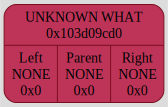
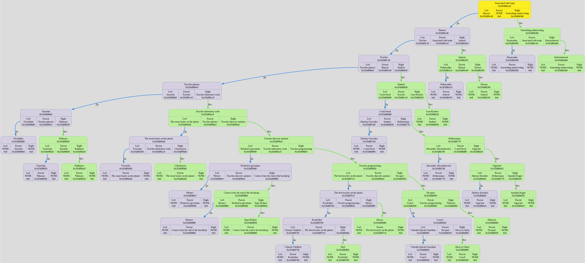

Colors meanings:
Binary Tree[0x16bb2f220] born at "/Users/anatolij/Documents/GitHub/Akinator/source/main.cpp": 8, name 'tree'
left subtree node
⮑ left subtree edge
right subtree node
⮑ right subtree edge
root node
⮑ unknown what edge
new node
unknown what node
DUMP #1: function TreeCtor was called from /Users/anatolij/Documents/GitHub/Akinator/source/main.cpp: 9

Binary Tree[0x1042e6380] born at "/Users/anatolij/Documents/GitHub/Akinator/source/Akinator_base.cpp": 11, name 'tree'
DUMP #2: function ReadAndCreateNode was called from /Users/anatolij/Documents/GitHub/Akinator/source/Akinator_base.cpp: 13

DUMP #3: function ReadAndCreateNode was called from /Users/anatolij/Documents/GitHub/Akinator/source/Akinator_base.cpp: 13

DUMP #4: function ReadAndCreateNode was called from /Users/anatolij/Documents/GitHub/Akinator/source/Akinator_base.cpp: 13

DUMP #5: function ReadAndCreateNode was called from /Users/anatolij/Documents/GitHub/Akinator/source/Akinator_base.cpp: 13

DUMP #6: function ReadAndCreateNode was called from /Users/anatolij/Documents/GitHub/Akinator/source/Akinator_base.cpp: 13

DUMP #7: function ReadAndCreateNode was called from /Users/anatolij/Documents/GitHub/Akinator/source/Akinator_base.cpp: 13

DUMP #8: function ReadAndCreateNode was called from /Users/anatolij/Documents/GitHub/Akinator/source/Akinator_base.cpp: 13

DUMP #9: function ReadAndCreateNode was called from /Users/anatolij/Documents/GitHub/Akinator/source/Akinator_base.cpp: 13

DUMP #10: function ReadAndCreateNode was called from /Users/anatolij/Documents/GitHub/Akinator/source/Akinator_base.cpp: 13

DUMP #11: function ReadAndCreateNode was called from /Users/anatolij/Documents/GitHub/Akinator/source/Akinator_base.cpp: 13

DUMP #12: function ReadAndCreateNode was called from /Users/anatolij/Documents/GitHub/Akinator/source/Akinator_base.cpp: 13

DUMP #13: function ReadAndCreateNode was called from /Users/anatolij/Documents/GitHub/Akinator/source/Akinator_base.cpp: 13

DUMP #14: function ReadAndCreateNode was called from /Users/anatolij/Documents/GitHub/Akinator/source/Akinator_base.cpp: 13

DUMP #15: function ReadAndCreateNode was called from /Users/anatolij/Documents/GitHub/Akinator/source/Akinator_base.cpp: 13

DUMP #16: function ReadAndCreateNode was called from /Users/anatolij/Documents/GitHub/Akinator/source/Akinator_base.cpp: 13

DUMP #17: function ReadAndCreateNode was called from /Users/anatolij/Documents/GitHub/Akinator/source/Akinator_base.cpp: 13

DUMP #18: function ReadAndCreateNode was called from /Users/anatolij/Documents/GitHub/Akinator/source/Akinator_base.cpp: 13

DUMP #19: function ReadAndCreateNode was called from /Users/anatolij/Documents/GitHub/Akinator/source/Akinator_base.cpp: 13

DUMP #20: function ReadAndCreateNode was called from /Users/anatolij/Documents/GitHub/Akinator/source/Akinator_base.cpp: 13

DUMP #21: function ReadAndCreateNode was called from /Users/anatolij/Documents/GitHub/Akinator/source/Akinator_base.cpp: 13

DUMP #22: function ReadAndCreateNode was called from /Users/anatolij/Documents/GitHub/Akinator/source/Akinator_base.cpp: 13

DUMP #23: function ReadAndCreateNode was called from /Users/anatolij/Documents/GitHub/Akinator/source/Akinator_base.cpp: 13

DUMP #24: function ReadAndCreateNode was called from /Users/anatolij/Documents/GitHub/Akinator/source/Akinator_base.cpp: 13

DUMP #25: function ReadAndCreateNode was called from /Users/anatolij/Documents/GitHub/Akinator/source/Akinator_base.cpp: 13

Binary Tree[0x16bb2f220] born at "/Users/anatolij/Documents/GitHub/Akinator/source/main.cpp": 8, name 'tree'
DUMP #26: function TreeDtor was called from /Users/anatolij/Documents/GitHub/Akinator/source/Akinator_dump.cpp: 20